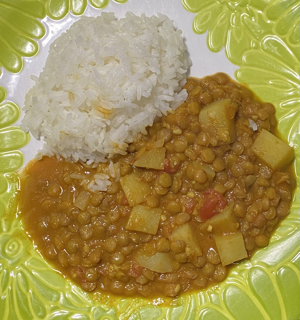

Lentil Curry

Description
This simple but nutritious meal is a go-to for many vegans and vegetarians. It's
highly customizable and delicious no matter what veggie combo you end up going with.
It's also great for leftovers!
Ingredients
For our specific curry, we used:
- Lentils
- Extra firm tofu
- Carrots
- Tomatoes
- Potatoes
Step by Step:
- Add oil to large pot
- Add spices and seasonings
- Add crushed tomatoes, cocunut milk, and water
- Once boiling, add in the rinsed lentils
- Let simmer for 30 minutes
- Serve over rice
Home